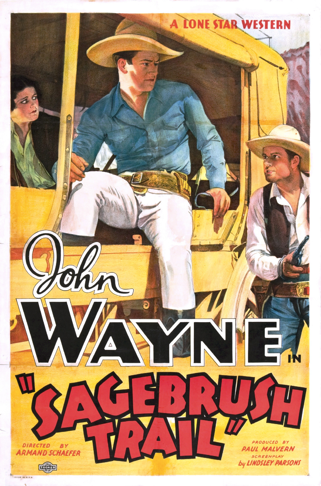
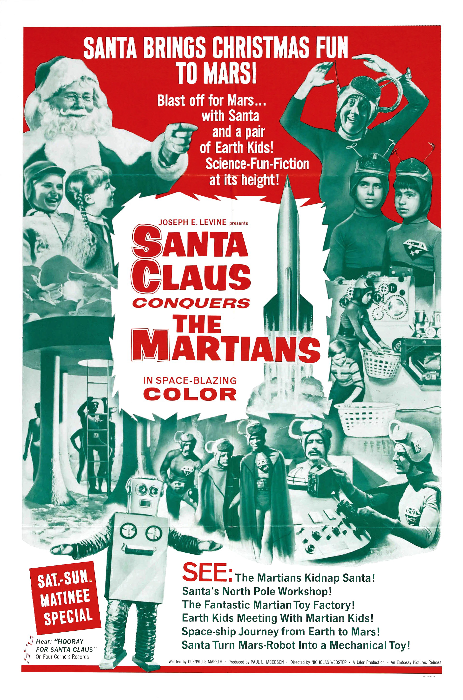
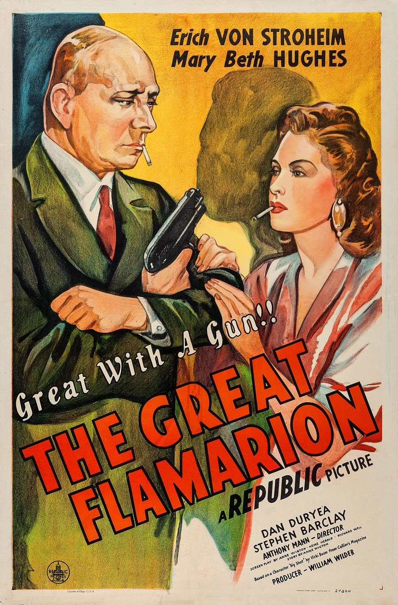

The Dance of Life
1929 1h 55m Musical

Burlesque comic Ralph "Skid" Johnson (Skelly), and specialty dancer Bonny Lee King (Carroll), end up together on a cold, rainy night at a tr…
5 commentsMovie Buff
8.3
1929 1h 55m Musical
Burlesque comic Ralph "Skid" Johnson (Skelly), and specialty dancer Bonny Lee King (Carroll), end up together on a cold, rainy night at a tr…
5 comments3.2
1933 54m Western
Sentenced for a murder he did not commit, John Brant escapes from prison determined to find the real killer. By chance Brant's narrow escap…
89 comments9.0
1955 1h 59m Drama

Frankie Machine (Frank Sinatra) is released from the federal Narcotic Farm in Lexington, Kentucky with a set of drums and a new outlook on…
18 comments2.3
1964 1h 21m Comedy
The Martians Momar ("Mom Martian") and Kimar ("King Martian") are worried that their children Girmar ("Girl Martian") and Bomar ("Boy Marti…
465 comments6.3
1936 16m Cartoon

In this short, Sindbad the Sailor (presumably Bluto playing a "role") proclaims himself, in song, to be the greatest sailor, adventurer and…
0 comments9.0
1955 1h 59m Drama
Frankie Machine (Frank Sinatra) is released from the federal Narcotic Farm in Lexington, Kentucky with a set of drums and a new outlook on…
18 comments8.9
1945 1h 18m Mystery
The film opens following a murder at a cabaret in Mexico City in 1936, and then presents the events leading up to it in flashback. The Grea…
12 comments2.3
1964 1h 21m Comedy
The Martians Momar ("Mom Martian") and Kimar ("King Martian") are worried that their children Girmar ("Girl Martian") and Bomar ("Boy Marti…
465 comments5.8
1939 1h 32m Comedy

John Mason (James Stewart) is a young, somewhat timid attorney in New York City. He has been doing his job well, and he has a chance of bei…
56 comments